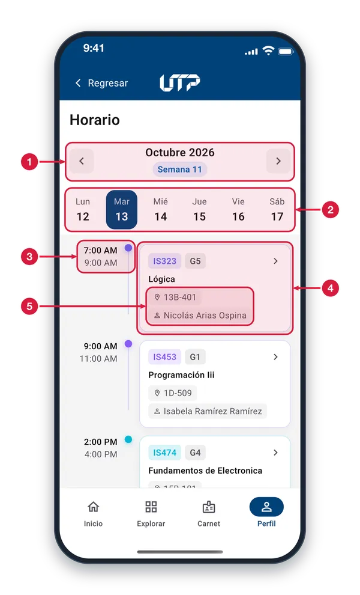
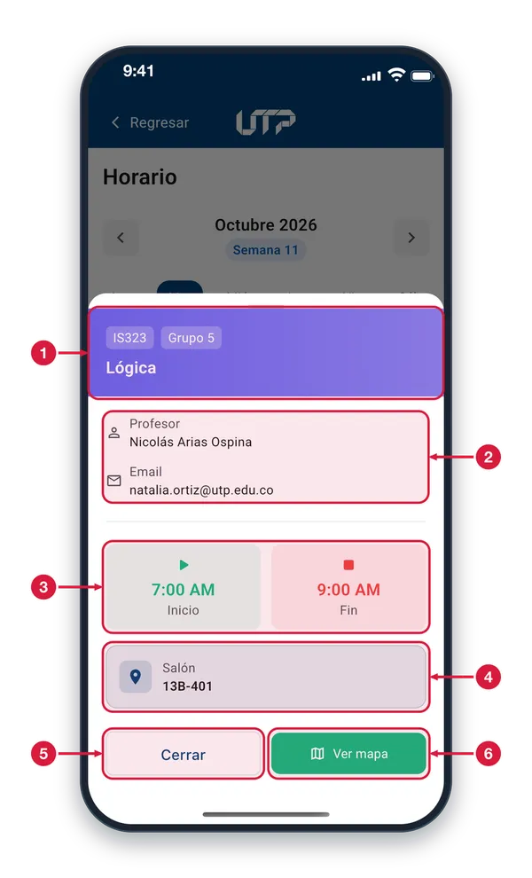
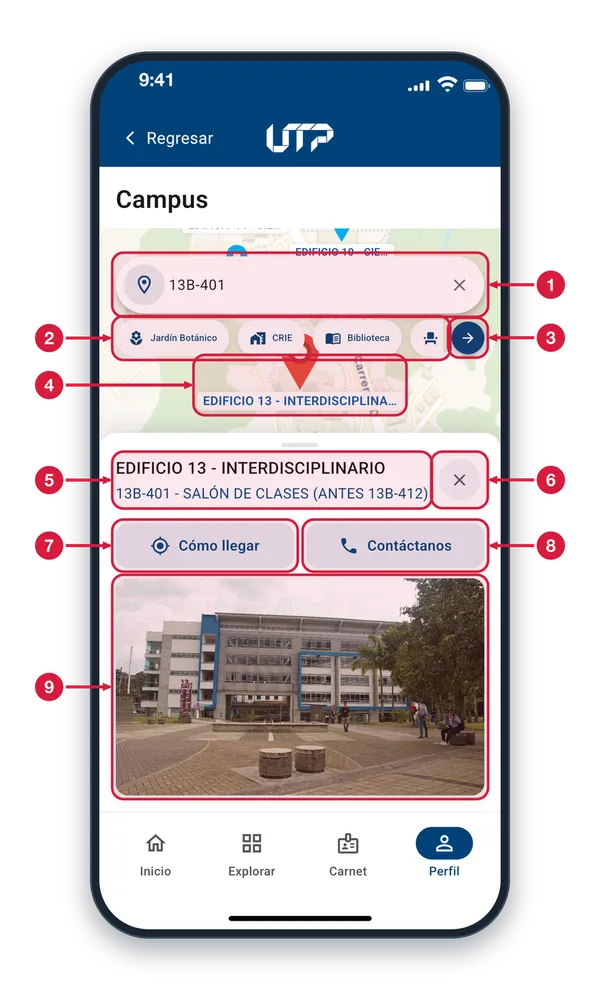

Tu horario semanal, el detalle de cada clase y el mapa.
Consulta tu horario académico semanal de forma interactiva: clases, aula, grupo y docente. Desde cualquier clase puedes abrir el mapa del campus para ubicar el salón.
Este módulo de Horario cuenta con:
Vista semanal con navegación entre semanas
Selector de día (lunes a sábado) con indicador del día actual
Tarjetas de clase con hora, materia, docente y salón
Detalle completo al tocar una clase
Botón «Ver mapa» para ubicar el salón en el campus
Solo podrás ver y hacer uso del módulo HORARIO cuando te loguees en la aplicación
Horario semanal1 de 3
Consulta tus clases de la semana, día por día. Entras desde Perfil, en «Ver horario», o desde Explorar, en Horario.

Cambiar de semana Las flechas pasan a la semana anterior o a la siguiente. Toca el mes y la semana del centro para abrir un calendario y saltar a la fecha que elijas. Sin clases, dice «Semana sin clases».
Días de la semana Toca un día, de lunes a sábado, para ver sus clases. El día elegido va resaltado en azul oscuro; si ese día no hay clases, verás el aviso «Sin clases».
Hora de la clase Arriba, la hora de inicio; abajo, la hora de fin. El punto de color de la materia y su línea unen la hora con la tarjeta de la clase.
Tarjeta de clase Muestra el código de la materia, el grupo (la letra G y su número), el nombre, el salón y el docente. Toca la tarjeta para abrir el detalle. Las demás funcionan igual.
Salón y docente El salón donde se dicta la clase (si todavía no tiene, dice «Sin asignar») y el nombre del docente.
Detalle de una clase2 de 3
Toca una tarjeta del horario y se abre esta hoja con los datos de la clase y un acceso al mapa del campus.

Materia y grupo En la franja de color ves el código de la materia, el grupo y el nombre completo de la asignatura.
Docente y correo El nombre del profesor y su correo electrónico. El correo solo aparece si la materia lo tiene registrado.
Hora de inicio y de fin La tarjeta verde es la hora en que empieza la clase y la roja, la hora en que termina, en formato de 12 horas.
Salón El salón asignado a la clase. Si todavía no tiene uno, dice «Sin asignar».
Cerrar Cierra la hoja y vuelves al horario, sin cambiar nada.
Ver mapa Cierra la hoja y abre el mapa del campus con el salón de esta clase ya buscado, para que veas dónde queda.
Mapa del campus3 de 3
«Ver mapa» te lleva al Campus con el salón de tu clase ya buscado, para que ubiques el edificio y llegues.

Buscador del campus Aparece escrito el salón de tu clase. Escribe otro edificio o salón y toca un resultado para ir a él. La X borra el texto para empezar de nuevo.
Categorías Toca una categoría, como Biblioteca o Auditorio, para ver solo esos lugares en el mapa. Desliza la fila para ver más; toca la activa otra vez para quitar el filtro.
Todas las categorías Toca la flecha para abrir la lista completa de categorías, con los edificios numerados, y elige una.
Edificio en el mapa El pin rojo marca el lugar que buscaste y su etiqueta dice el edificio. Mueve el mapa con el dedo y toca otro edificio para ver su información.
Nombre del lugar Arriba, el edificio; debajo, en azul, el salón o espacio que seleccionaste.
Cerrar el panel Toca la X para cerrar el panel de información y volver a ver todo el mapa.
Cómo llegar Abre Google Maps dentro de la app, ubicado en este lugar, para que veas cómo llegar.
Contáctanos Abre el marcador del teléfono con el número de contacto de este lugar. Si tu dispositivo no puede llamar, la app te muestra el número para que lo marques.
Foto del lugar Foto del edificio para que lo reconozcas al llegar. Si no carga, verás el aviso «Imagen no disponible».